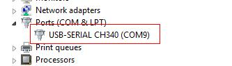

USB To Uart 3V3 is a USB to serial adapter, which is based on CH340, a USB bus convert chip. It can realize the convert of USB to serial interface/IrDA infrared/printer interface. This module can be used for uploading code or communicating with MCUs.
USB To Uart 5V/3V3 is used as USB To Serial Port interface.It need to install driver.
Totally compatible with serial application program in computer endpoint Windows operation system

Driver download: http://www.wch.cn/download/CH341SER_MAC_ZIP.html
On Mac OS Yosemite:
If you want restore your Mac’s setting,You can exit developer mode by redefining the boot-arg to your previous settings, or clear your boot-args as follows: sudo nvram -d boot-args
You should like this connect your circuit.
We can download code to Seeeduino Ethernet by USB To Uart 3V3.
Note that you should select the correct board type and COM port.
USB To Uart 3V3 v1.0 Eagle File
Copyright (c) 2008-2016 Seeed Development Limited (www.seeedstudio.com / www.seeed.cc)